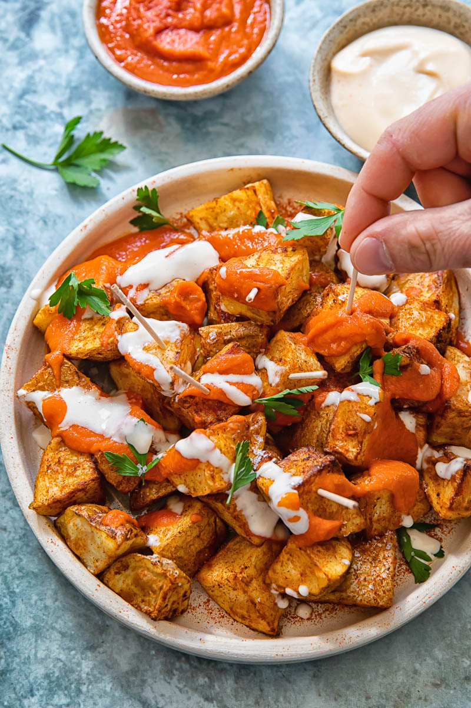

Ingredientes
- Patatas
- Aceite de oliva
- Sal
- Salsa brava
- Mayonesa
Preparación
- Pelar y cortar las patatas en dados.
- Freír las patatas en aceite de oliva hasta que estén doradas.
- Escurrir las patatas y añadir sal.
- Colocar las patatas en un plato.
- Añadir la salsa brava y la mayonesa.
- Servir.